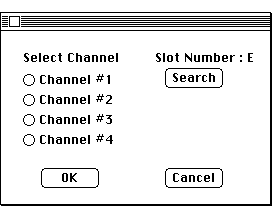

Distributed By: Virtual Labs
Configure Video Dialog Box
PATH...File Menu:New:Digitize Image...
PATH...{Digitize Image}:Image Menu::Configure Video...
The Digitize Image dialog boxes can only be accessed if a Data Translation
Quick Capture or equivalent video frame grabber is installed. They are used
to support Desktop Microscopist's digitizing and image analysis capabilities.
Digitize Image: Configure Video Dialog:

Configure Video Dialog Box
This dialog box is used to configure the interface between Desktop Microscopist
and the video frame grabber. Desktop Microscopist supports the .i.Data Translation
Board; DT2255 board. This dialog box will search to determine if such a
board has been installed. This may be accomplished by clicking on the .i.
Digitize Image:Configure Video Dialog:Search ;button. Each board supports
4 video channels. The .i.Digitize Image:Configure Video Dialog:Channel ;radio
buttons are used to select which of the channels on the frame grabber will
be used for the capture of the image. Clicking OK will define the configuration..i.Video
Input;.i.Frame Grabber;
Author: J.ames T.
Stanley
 Desktop
Manual:Dialog Boxes
Desktop
Manual:Dialog Boxes
Distributed By: Virtual Labs
Last Updated:1/12/96 Sat, Apr 27, 1996